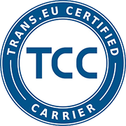

Jesteśmy firmą transportową specjalizującą się w transporcie międzynarodowym. Głównymi kierunkami naszych wyjazdów są kraje Europy Zachodniej, takie jak Niemcy, Holandia, Austria i Czechy.
Wśród naszej floty posiadamy nowoczesne busy i ciężarówki Renault oraz MAN, mogące pomieścić od 8 do 20 palet typu euro, oraz mogące załadować od 1,3 tony do 6,5 tony. Posiadamy także przyczepy, które łącznie z ciężarówką dają możliwość przewiezinia nawet 38 europalet. Gwarantujemy zadowolenie z naszych usług oraz terminowy i rzetelny transport.
Dlaczego warto nam zaufać:

Certyfikat Sprawdzonego Przewoźnika
Posiadamy certyfikat TCC Elite przyznawany sprawdzownym przewoźnikom na platformie Trans. Potwierdza on stan prawny firmy, jej doświadczenie i reputację, a także potwierdza posiadanie floty pojazdów spełniających najnowsze normy ekologiczne i wyposażonych w system GPS.
100% pozytywnych opinii
Posiadamy 100% pozytywnych ocen na giełdzie Trans. Od 2014 roku setki firm powierzyły nam swoje ładunki i nigdy nie otrzymaliśmy reklamacji wobec wykonanej usługi.
Certyfikat Audytowanej Polisy
Posiadamy certyfikat OPC Audited, który potwierdza posiadanie polisy, która jest aktywna oraz opłacona, a zakres ochrony został dobrany tak, aby w przypadku szkody zapewnić przewoźnikowi ochronę w zakresie wszystkich najczęściej występujących zdarzeń.
Chętnie nawiążemy długoterminową współpracę z firmami zainteresowanymi eksportem towaru do Niemiec, Holandii, Czech, Słowenii oraz Austrii. Gwarantujemy atrakcyjne ceny usług transportowych, oraz jesteśmy otwarci na negocjację stawek. Gwarantujemy terminowość oraz solidne wykonanie usług.
Zapraszamy do skontaktowania się z nami!
Dariusz Dybek, tel. +48 602 130 312
Konrad Dybek, tel. +48 604 434 852
Zofia Dybek, tel. +48 661 061 661
Nasz e-mail: expopoland.sc@gmail.com
Znajdziesz nas pod adresem:
Expo Poland s.c. Dariusz Dybek, Konrad Dybek
Al. Armii Krajowej 220 / Pawilon 3
43-316 Bielsko-Biała
NIP: 9372669968